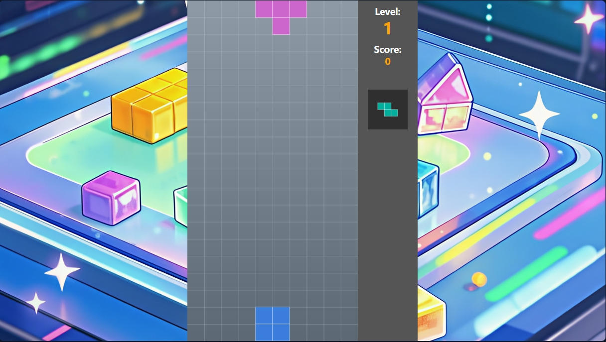
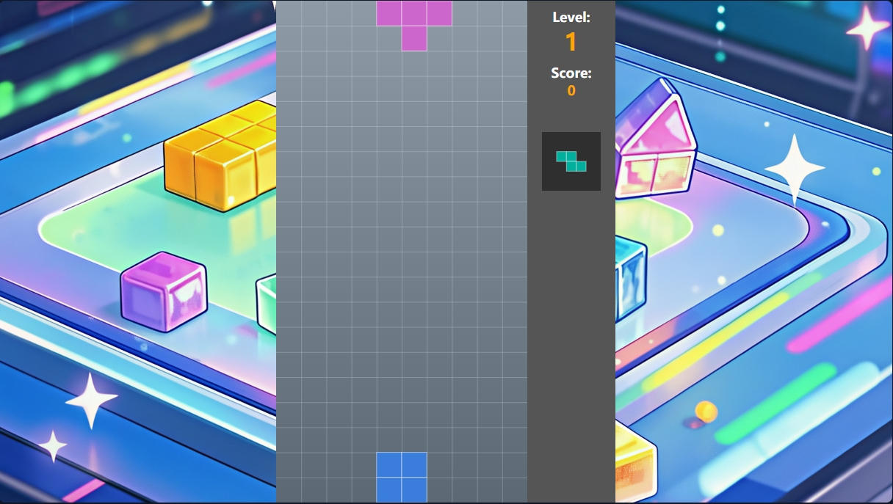
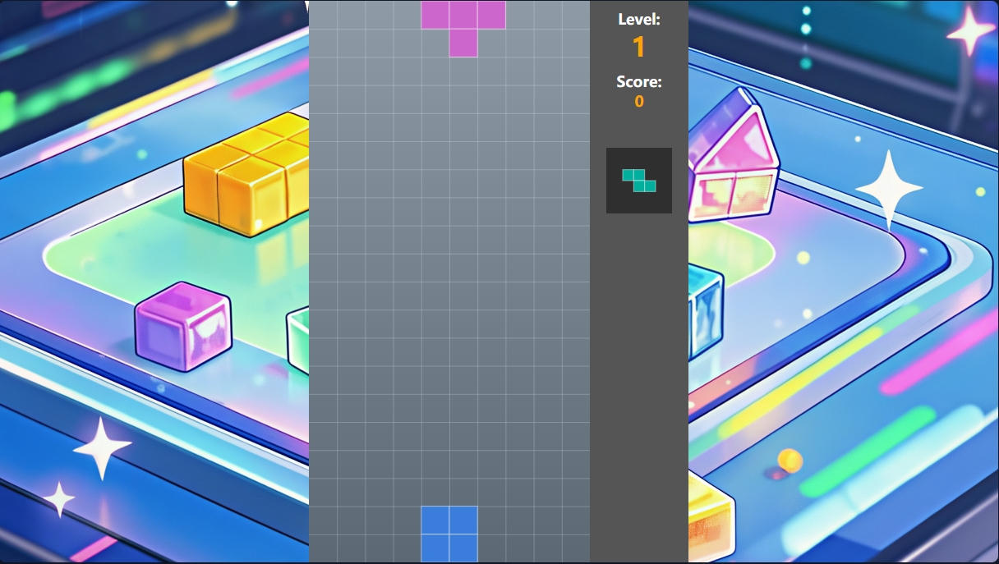

1. Relative Paths
Using relative paths from current directory:
 


This page tests different ways of loading images to diagnose issues.
Using relative paths from current directory:

Using absolute paths from root:


Testing different folder notations:


Using complete URLs:


Testing lowercase filenames: